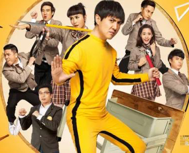
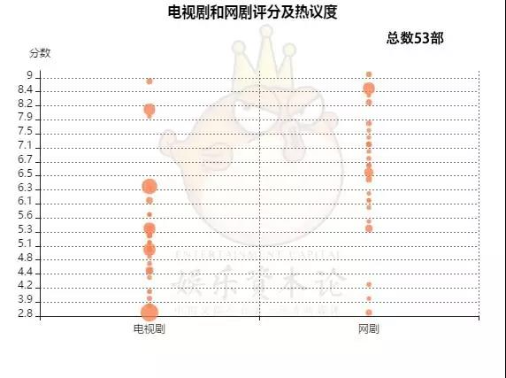

岗位描述
我在《娱乐资本论》岗位是采编部文字记者，体验了从选题、前期准备、采访、写稿的整套环节，实习期间主要涉猎影视方向的报道，包括电影、电视剧、网大、短视频等，稿件类型涵盖人物稿、行业稿、编译稿、合作稿以及数据新闻。
泛娱乐产业是个信息更新很快，资讯非常丰富的行业。因此，对于记者素质要求很高，包括资讯整合能力、行业动态敏感、审美鉴赏能力、价值观判断等综合素质。以影视线口的报道为例，首先记者需要了解一些影视与文学专业知识，包括制作基本流程，内容与形式创意，表演技巧，导演技巧，拍摄与剪辑技巧，叙事风格、结构、节奏，故事情节，人物形象等等，这些是写影视评论稿件的基础。
除了内容与制作方面，影视记者还需要具备行业眼光，从影视投资、制作、发行、宣传、营销效果等维度进行报道。比如关注票房情况，项目类型，营销特点，社会舆论环境，代表性人物（导演、编剧、制片人等），市场变化（尤其是随着这两年网生内容的崛起）。总之，需要具备影视工业化体系的思维。
单位概况 | 娱乐资本论
进入官网
领域
电影
主要接触的是幕后工作者，导演、制片人、编剧等，也关注网络大电影市场与营销。代表作有： 《从祝英台反串说起：“反腐”这一年，耽美教父教母是否顺利转型？》、 《网络大电影有钱了》、 《那个有可能拍出中国版《银翼杀手》的导演，我们找着了》等
短视频
关注了短视频内容生产、营销、平台宣发、MCN矩阵等。代表作有： 《为网红定制音乐故事，三感要通过短视频打造一批papi酱？》、 《电影解说这门生意:月播放量12亿，有人辞职有人上瘾》
编译
关注国外传媒行业实时动向，包括文娱、科技、商业报道。代表作有： 《美总统、传媒大亨均卷入性丑闻，韦恩斯坦效应改变社会潜规则？》、 《王牌特工2 抹黑柬埔寨遭禁？进口片遭政治绑架太普遍》、 《600亿美元！坐拥皮克斯漫威卢卡斯的迪士尼，为何还要鲸吞福克斯？》等20余篇
数据新闻
数据抓取、数据清洗、数据分析、可视化制图。代表作有： 《我们研究了53部暑期剧集的豆瓣评论，原来打分有三大规律》、 《豆瓣2.8的《深夜食堂》平台8.3，优爱腾的评分有哪些小九九？丨260部大数据分析》
文章
更新于2017年12月10日
点击此处可查看全部作品链接目录
-
从祝英台反串说起：“反腐”这一年，耽美教父教母是否顺利转型？
-

网络大电影有钱了
-

两年前的旧案为何风波未平？专业律师尤其是双方当事人律师对此案怎么看？娱乐资本论（ID：yulezibenlun）说法讲堂，下面开启。 ">
大鹏“打”影评人就震惊了？两年前开心麻花诉影评人案，近期第四次庭审了
-

豆瓣网友喜欢什么类型的剧集？点评时主要有哪些关键词？diss的又是哪些内容？近日，小娱统计了豆瓣上从五月至八月总共53部剧集的评分情况，整理出高分剧和低分剧的类型，并采集了6000+条代表性剧集的短评进行文本分析，从数据结果中窥觑到不少有意思的现象。">
我们研究了53部暑期剧集的豆瓣评论，原来打分有三大规律
-

那个有可能拍出中国版《银翼杀手》的导演，我们找着了
-

还原吕克·贝松：《星际特工》不曾献媚好莱坞，那叫致敬共产主义!丨专访
{kind=link}
{kind=link}
{kind=link}
编辑评语

第一次见到珊妮时，给我感觉就是一个很令人舒服的女孩，没有太多初次见面的拘束感，好奇心强，喜欢说话，不怯场。我看了不少面试者的稿子，珊妮写快递小哥的那篇挺打动我，能关注到个体命运的人，在我眼中都有做好记者的潜力。珊妮在娱乐资本论工作这几个月，完成了不少有质量的稿件，在娱乐行业积累了自己的经验。希望未来的珊妮能保持初心，做一个快乐，对世界永远抱有好奇与善意的女孩，不管在哪个工作岗位，相信你都会很出色。
蔡珊妮工作积极，在我司策划了“河豚拆墙”的栏目，并一直坚持每周两期更新，内容直击海外文娱产业最新动态，完成度很不错。珊妮还很有创新精神，给全公司采编同事介绍了数据挖掘和数据分析的各种方法，同时尝试通过词频分析的方式操作稿件，表现很不错！

更新中
自我鉴定
实习目的
选择在娱乐资本论实习，是因为我本身喜欢文化、娱乐和明星话题，而娱乐资本论的定位是以行业、资本的眼光高度进行文娱报道，符合我职业选择的预期。
此外，随着移动互联网的发展，技术赋能娱乐活动，可以说文娱产业报道已经逐渐演变成“泛娱乐+泛科技”的行业报道，大家关注的内容已经由单纯文娱产品本身辐射到广告植入、营销创意、平台开发、交互思维、互联网传播现象等方面，因此这个行业与我所学的传媒专业知识密切相关，也是我选择在娱乐资本论实习的主因。
实习内容
实习期间主要涉猎影视方向的报道，包括电影、电视剧、网大、短视频等，稿件类型涵盖人物稿、行业稿、编译稿、合作稿以及数据新闻。
泛娱乐产业是个信息更新很快，对记者素质要求很高，包括资讯整合能力、行业动态敏感、审美鉴赏能力、价值观判断等综合素质。以影视线口的报道为例，首先记者需要了解一些影视与文学专业知识，熟悉产业概貌。其次需要培养电影工业化思维，关注影视投资、制作、发行、宣传等各方面，比如关注票房情况，营销特点，社会舆论环境，代表性人物，行业变化等。
实习心得
在娱乐资本论实习的这段时间，是我专业技能成长最快的日子，也让我越发喜欢这个领域。我非常感谢带我的编辑曹乐溪，她的文章和人一样，大气平和；也谢谢吴立湘的提点，虽然他思考问题比较直男式，但看总能一针见血，对我而言受益匪浅。
目前我最大的问题是没有选题灵感，发散性思维不够。一方面需要不断累积自己的行业知识，另一方面就是要捋清事物的内在联系，透过现象看本质。我还需要掌握时间管理和信息管理技能，需要提升效率，多学习、多思考，不断克服短板，争取当一名优秀的文娱记者。
联系方式
个人信息
蔡珊妮全新闻1401广东外语外贸大学
Phone: (+86) 177-6524-8649
caishanni1019@126.com